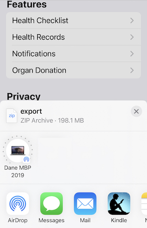

Do your own data analysis on Apple Health Data
When Apple came out with the Watch and Health Apps they were quite limited and it seemed like they were not that useful. As Apple does with many products, it continued to improve these products, and there is now an abundance of data available through the Health App. Even with these improvements, the analyses that can be performed in the apps are limited. At best you can see a graph of the data or look at the individual data points.
This blog series will explain how to extract data from the Health app and then perform your own analysis of that data. By doing our own analysis, we can get more insight into the data than is possible from the built-in. For example we can:
- look at long-term averages
- compare multiple metrics against each other
- filter out erroneous data
- combine data with data from other sources
The information in the Health app will depend on how a user configures it, containing only the data types applicable to that user. In this series, we will cover the common data types but YMMV. Some of the data we will discuss are:
- Step Data (both watch and phone data)
- Heart Rate
- Exercise Data
- Blood Pressure Data
Data analyses will be done in Python using Pandas as an example, but a user can easily use other tools. Python code is also provided to convert the Apple Health data into columnar data.
Data from an Apple Watch will automatically synchronize with the Heath app on your phone. You can then use the Health app to extract this information and transfer it to a computer for analysis. This post will walk through the process.
Extracting the Data
Note: It can take several minutes to extract the data from the Health app which should not be interrupted so plan accordingly.
Open the Health App
Open User Page
At the top of the Summary screen, on the right side, is your user profile button.
Shown as a small circle with the your initials. Select this button to display the User Profile.
Export the Data
Scroll to the bottom of the Profile to reach the Export command,
and press the button. A pop-up will be displayed asking if you are sure and select Export
Transfer to Your Computer
At the end of the export you will be given the option to Share the data. This is the step where we want to transfer the data file to a computer. If you have AirDrop setup this is the easiest, and fastest, way to move the data.
The exported file is named export.zip and is a compressed archive of your health data.
If you don’t have AirDrop, then you can transfer it using email although this can be a problem as the file can be quite large (200Mb in my case).